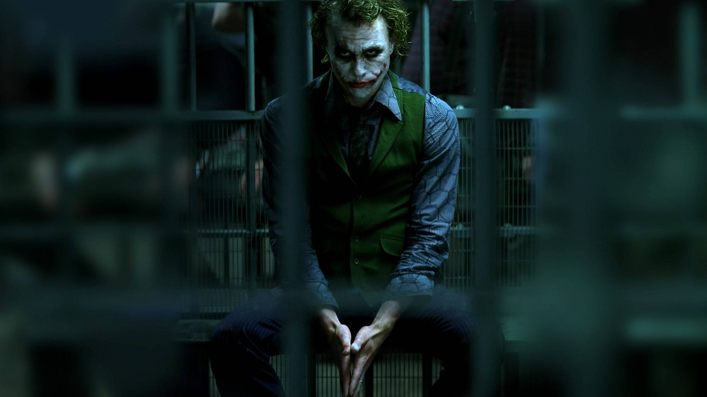

Первый выход Джокера
В привычном для нас виде клоун-террорист появился в 1940 году. Кто на самом деле приходится отцом этому персонажу — загадка, которой не суждено быть разгаданной. Каждый из трёх людей, работавших в то время над комиксами о Бэтмене — Боб Кейн, Билл Фингер и Джерри Робинсон, — утверждал, что Джокера создал именно он, а остальные, дескать, лишь подхватили идею.
Установить, кто из них прав, уже невозможно. Зато точно известен источник вдохновения — немецкий актёр Конрад Фейдт в образе Гуинплена из экранизации романа Виктора Гюго «Человек, который смеётся» 1928 года. А ещё, как ни странно, игральная карта «Джокер».
Те, кто думает, что поначалу Джокер был весёлым преступником-балагуром, а убивать начал лишь к концу XX века, плохо знают историю комиксов. Так называемый «Золотой век», длившийся с конца 1930-х по начало 1950-х, был густо замешан на крови. Тот же Бэтмен, например, не сразу стал махровым моралистом и когда-то с гангстерами не церемонился. В упор, конечно, не стрелял, но если приходилось скинуть очередного бандита с крыши, не колебался. Вот и Джокер дебютировал в комиксах как настоящий серийный убийца.
По сюжету выпуска Batman #1 новоявленный злодей объявлял по радио имена своих жертв, обычно кого-нибудь из городской элиты Готэма, и те ровно через сутки умирали с неестественными улыбками на лицах. Цель маньяк преследовал простую — посеять страх и получить основанный на нём авторитет у местных гангстеров. Весьма разумный план. Ранний Джокер вообще был далёк от безумия. Жестокий, хладнокровный, изобретательный, но едва ли сумасшедший. Он даже почти не смеялся.
Но кое-что иррациональное в нём всё же было. Злобный шут решил, что не хочет знать, кто скрывается под маской Бэтмена, и даже отказался убить героя при первой возможности — так ведь неинтересно. Если проводить параллели между первым Джокером и интерпретацией Хита Леджера, образ злодея в «Тёмном рыцаре» уже не кажется таким неканоничным
Когда Джокер был смешным
Целых десять лет никто из авторов и не думал объяснять, почему у персонажа белая кожа и зелёные волосы. Хотя для комиксов о Бэтмене это не было обычным делом. Джокер вообще стал первым полноценным суперзлодеем Бэт-вселенной — до него Брюс Уэйн дрался с рядовыми преступниками. История про падение грабителя в красном колпаке в чан с химикатами появилась только в начале 1950-х и до сих пор считается каноном.
Примерно в это же время психиатр-консерватор Фредрик Вертхэм опубликовал скандальную книгу «Развращение невинных», где утверждал, что комиксы засоряют умы детей и выводят их на кривую дорожку. Работа наделала много шума, и издательства по всей Америке были вынуждены принять «Кодекс комиксов», который обязывал сценаристов и художников к жёсткой самоцензуре. Так начался «Серебряный век» — эпоха весёлых, безобидных и однообразных приключений.
Под раздачу попали и Бэтмен с Джокером, превратившиеся в благородного рыцаря и шаловливого клоуна соответственно. Ни о каких убийствах отныне и речи быть не могло. Их место заняли тематические преступления. Накачать город веселящим газом и заставить всех повыкидывать драгоценности, совершить ограбление, нарядившись Чарли Чаплином или Бастером Китоном, сбежать от полиции, рассмешив копов до беспомощности, — вот что теперь было по душе белолицему злодею. Да и какой он злодей? Так, хулиган и пакостник.
В 1960-е Джокер наконец-то получил первое экранное воплощение в сериале «Бэтмен» с Адамом Уэстом. Исполнил роль актёр кубинского происхождения Сезар Ромеро, который до того играл в основном героев-любовников. Впрочем, в новом амплуа он проявил себя ярко. Джокер получился шумным, дурашливым, но обаятельным — под стать самому сериалу.
Шутки кончились
В 1970-х на Джокера потихоньку перестали действовать пилюли добродушия, которыми его пичкали двадцать лет. В массовую культуру, особенно в кино, проползало насилие, и комиксы не могли не поддаться общему веянию. Именно тогда сага о Тёмном рыцаре приобрела знакомые нам черты мрачного детективного триллера.
Первым звоночком, ознаменовавшим возвращение клоуна-убийцы, стал сюжет «Пять способов мести Джокера» 1973 года. В нём злодей в очередной раз сбежал из-под стражи, но вместо того, чтобы совершать абсурдные преступления, начал карать бывших подельников, бросивших главаря на произвол судьбы. И кара не подразумевала бросок торта в лицо — нет, всё было по-взрослому. Двоих отравили ядом смеха, ещё один затянулся сигарой с нитроглицерином, а четвёртого маньяк просто повесил. Последний подручный должен был стать закуской для акулы, но Бэтмен спас его.
Настоящий ренессанс Джокер пережил в 1980-е, когда вышли два сюжета о нём, оставившие глубочайший след в истории комиксов. Про «Убийственную шутку» Алана Мура хоть раз слышал каждый, кто увлекается гик-культурой. Этот графический роман стабильно входит в топы комиксов, обязательных к прочтению. Причин тому много.
Во-первых, именно после событий «Убийственной шутки» Барбара Гордон, она же Бэтгёрл, оказалась прикована к инвалидному креслу. Это был смелый ход со стороны издательства — до этого герои никогда не лишались сил надолго и уж точно не становились инвалидами.
Во-вторых, «Убийственная шутка» — это первая попытка показать Джокера живым человеком, трагической фигурой, чьё безумие имеет вескую причину. Благодаря ловкой манипуляции эмоциями читатель с удивлением обнаруживал, что зловещему шуту, оказывается, можно сопереживать. Но ошибочно полагать, будто в комиксе раскрывается настоящая предыстория Джокера, — нет, убивать интригу DC и Мур не рискнули бы. В романе предлагается лишь один из возможных вариантов.
А вот арка «Смерть в семье», напротив, стремилась читателя не удивить, а ублажить. Аудитория DC в то время обожала жестокие выходки Джокера и ненавидела второго Робина — Джейсона Тодда. Сценаристы создали его на замену сверхправильному Дику Грейсону, который ушёл от Бэтмена на вольные хлеба и стал Найтвингом. Новый чудо-мальчик должен был в духе времени стать «плохим парнем», но вместо этого стал плохим персонажем.
Дерзкий и резкий сайдкик настолько не нравился публике, что DC пошли на беспрецедентный шаг — запустили телефонное голосование, выживет Тодд в ходе очередного приключения или нет. Читатели хладнокровно приговорили парня к смерти. Гибель его не была быстрой или безболезненной — Джокер, дьявольски хохоча, избил юношу монтировкой и, едва живого, оставил на заминированном складе. Бэтмен пытался спасти подопечного, но всё уже было предрешено.
Со временем Джейсон Тодд воскрес, но на это ушло десять с лишним лет. А в 1980-е гибель Робина была окончательной и бесповоротной. Сложно переоценить важность этого сюжетного поворота для «Бэтмена» и индустрии комиксов в целом. Позже сценаристы ещё не раз заставляли Джокера совершать куда большие зверства, выходя за всякие рамки. Но превзойти по эффектности «Убийственную шутку» и «Смерть в семье», кажется, никто так и не смог.
На больших и малых экранах
Успех фильма «Супермен» 1978 года и возросшая популярность комиксов о Бэтмене убедили студию Warner Bros., что публика готова к большому кино о Рыцаре ночи. Ходить студийные боссы решили сразу с козырей. Вернее, с Джокера. В ранних черновиках сценария был ещё и Пингвин, но создатели выбросили его, чтобы не отвлекать внимание зрителей от противостояния двух архиврагов.
Кинокомпания хотела, чтобы фильм стал однозначным хитом, а допустимый риск был исчерпан наймом молодого Тима Бёртона на должность режиссёра и не слишком известного Майкла Китона на роль Бэтмена. Злодея должна была сыграть настоящая звезда. Интерес к этой роли проявляли Робин Уильямс и даже Дэвид Боуи.
Легенда гласит, что Джек Николсон стал главным кандидатом после того, как один из продюсеров увидел «Сияние» Стэнли Кубрика. Дикий оскал и безумные глаза актёра произвели неизгладимое впечатление на кинобосса, и тот убедил коллег, что Джокера должен играть Николсон и никто иной. После долгих уговоров Джек согласился, но гонорар запросил баснословный — 60 миллионов от сборов картины и процент от продаж видео и мерчендайза.
Джокер в фильме Бёртона получился ярким и харизматичным, но… совершенно не безумным. Это самовлюблённый и жестокий гангстер-пижон, но не инфернальный шут, от чьего смеха по коже бегут мурашки. Быть может, причина в том, что его происхождение не покрыто завесой тайны. Зрителю известно, что до падения в чан с химикатами Джокер Николсона был обычным бандитом. Сценаристы даже дали ему человеческое имя — Джек Нэпьер (в честь покойного актёра Алана Нэпьера, сыгравшего Альфреда в «Бэтмене» 1960-х). Нет загадки, нет интриги. А уж решение сделать именно его убийцей родителей Брюса Уэйна вызвало дикое возмущение у фанатов комиксов.
Впрочем, фильм получился стоящим и успешным. Он популяризировал Бэтмена и Джокера, показал их во всей мрачной красе, стёр воспоминания о старом комедийном шоу. Warner Bros. почти сразу дали добро на сиквел и, что для нас куда важнее, мультсериал «Бэтмен» за авторством Брюса Тимма и Пола Дини — готический, мрачный, не желавший сюсюкаться с юным зрителем. Конечно, рассчитан он был в том числе и на детей, но поднимать взрослые темы не стеснялся. Там была драма, был психологизм. Именно там появилась спутница Джокера — всеми любимая Харли Квинн. А ещё там был лучший Джокер вне комиксов.
Когда Марка Хэмилла пригласили на студию, он был уверен, что ему предложат написать пару сюжетов для сериала. После «Звёздных войн» его актёрская карьера не задалась, и Марк начал писать сценарии, даже добился в этом успехов. Поэтому, когда его попросили встать за микрофон, бывший Скайуокер несколько удивился. Но ничего необычного в этом не было — за два года до того Хэмилл сыграл суперзлодея Трикстера в сериале «Флэш», созданном тем же телевизионным подразделением WB на волне популярности бёртоновского «Бэтмена». Типажи двух злодеев во многом совпали, и создатели решили позвать именно этого актёра.
И это оказалось одним из самых верных решений чуть ли не во всей истории мультсериалов. Марк настолько тонко и верно прочувствовал персонажа, настолько вошёл в роль, что по сей день считается лучшим голосом Джокера из всех. Да что там — просто лучшим Джокером. Он забавный, жуткий, безумный, а его смех не спутать ни с чем.
Джокер нового века
В 1990-е индустрию комиксов лихорадило. Кризис продаж, кризис идей — в общем, кризис всего. В том, что творилось во вселенной DC тех лет, с её параллельными мирами, сдвигами пространства-времени, внезапными смертями и воскрешениями, сломит ногу и сам дьявол. Поэтому мы обойдём стороной это царство хаоса, благо ничего действительно эпохального про Джокера тогда не выходило. Хотя истинные знатоки комиксов с этим наверняка могут поспорить.
Оставался на периферии он и в начале 2000-х. В значимых арках вроде «Бэтмен: Тихо!» клоун мелькал, но чаще на вторых ролях. Читателям и авторам он как будто приелся. Заезженный образ нуждался в кардинальном обновлении.
В мультсериале «Бэтмен» 2004 года Джокер уже предстаёт в непривычном облике. Он сгорблен, двигается на обезьяний манер, вместо аккуратной причёски — пышная зелёная грива, вместо фрака — смирительная рубашка. Непривычно, но свежо и смело, хотя в целом мультсериал сильно уступал предшественнику. Но те перемены в Джокере были лишь знамением того, что на самом деле грядёт.

Когда Кристофера Нолана спросили, почему он пригласил на роль Джокера в «Тёмном рыцаре» именно Хита Леджера, режиссёр ответил: «Потому что Хит бесстрашен». А для того, что задумали Нолан и Дэвид Гойер, была необходима недюжинная смелость. Оба в полной мере понимали, какой груз ответственности лежит на их плечах, несмотря на то, что Кристофер был и остаётся далёк от комиксов. Перезапустить франшизу о Бэтмене — это одно, а вписать в условно-реалистичный мир фантастического персонажа, к тому же имеющего гигантскую армию фанатов, — совсем другое. Для этого требовался актёр, готовый, во-первых, принять шквал критики от гиков, а во-вторых, убедить мир в правоте создателей фильма, покусившихся на канон.
Про Джокера Леджера написано немало статей и даже научных трудов. Это, вне сомнения, одна из самых ярких и влиятельных актёрских работ в кино начала XXI века. Но консерваторы от комиксов все же критикуют его за неканоничность. Дескать, никакой это не мистер Джей: ведёт себя не так, выглядит не как положено, и вообще, Нолан снял что-то своё, а не экранизацию комиксов про Бэтмена.
o Последней записью в дневнике, который Леджер вёл от лица Джокера во время подготовки к роли, были слова «пока-пока» на всю страницу. Жуткое совпадение Но если разбирать образ, созданный Леджером, именно в контексте истории персонажа, то выяснится интересная вещь: суть Джокера актёр и сценаристы уловили максимально точно. Каким должен быть шут-убийца? Безумным? Джокер в «Тёмном рыцаре» строит грандиозные многоходовые планы ради достижения одному ему понятной иррациональной цели. Коварным и жестоким? Скольких он убил по ходу фильма, сколько жизней сломал! Именно он превратил честного и благородного Харви Дента в одержимого местью Двуликого, показательно осквернив идеалы морали, едва возникшие в Готэме. Эксцентричным и ироничным? Да все монологи Джокера напоминают стендап-шоу радикального комика, а сам он представляет собой эдакий гибрид Энди Кауфмана с Чарльзом Мэнсоном. А как он заливается смехом во время избиения — это же самая показательная сцена, отражающая суть персонажа!
Даже особое отношение Джокера к Бэтмену раскрыто в «Тёмном рыцаре» куда лучше, чем у Бёртона, где клоун-гангстер воспринимал архиврага как очередную помеху, не более. Так что всё каноничней некуда.
Клоун без лица
С выхода «Тёмного рыцаря» прошло уже восемь лет. Всё это время Джокер, интерес к которому резко вырос, постоянно мелькал в комиксах, мультфильмах и видеоиграх. Особо выделим серию Batman: Arkham, в которой к любимой роли на две игры вернулся Марк Хэмилл, а на смену ему пришёл не менее талантливый Трой Бэйкер. Франшиза охватывает почти всю историю противостояния Бэтмена и Джокера — от первого столкновения до гибели смеющегося психопата и его, так сказать, посмертного существования. Это грамотная компиляция десятков комиксных сюжетов в несколько объёмных, но цельных произведений.
Что до комиксов, больше всего шуму наделала версия клоуна из вселенной The New 52. Сценарист Скотт Снайдер (не родственник Зака Снайдера, если что) пошёл на дерзкий ход: по сюжету Джокер теряет лицо. В буквальном смысле. Клоуну его просто отрезают. А спустя какое-то время он крадёт своё лицо из хранилища улик готэмской полиции. И надевает. Как маску. Прямо на голое мясо. Бр-р-р, даже писать об этом неприятно.
Тем не менее такой экстрим подошёл персонажу как нельзя лучше. Новый облик подчеркнул всю глубину психического расстройства клоуна. Он настоящее чудовище, чей воспалённый мозг генерирует гениальные и изощрённые планы. Даже Харли Квинн боится такого мистера Джея, и её можно понять.
Кажется, Джокер способен пережить что угодно только потому, что сама смерть предпочитает держаться от него подальше. Бэтмен как никогда растерян и беспомощен перед этим воплощением хаоса. В финале арки «Смерть семьи», которая считается одной из лучших в The New 52, Тёмный рыцарь одерживает победу над врагом, но складывается впечатление, что это тоже лишь часть плана Джокера. Шоу должно продолжаться.
За последний год мы получили целых двух новых экранных Джокеров. Первый из них появился в сериале «Готэм», и с ним всё непросто. Персонажа, которого играет Кэмерон Монахэн, зовут Джером Валеска. Он сын цирковой артистки, который убил собственную мать, после чего был помещён в лечебницу Аркхем, сбежал оттуда и стал разудалым преступником со склонностью к театральным эффектам.
Создатели утверждают, что Джером не Джокер, но верить им трудно. Он ведёт себя как Джокер, говорит как Джокер, смеётся как Джокер. Он даже выглядит как Джокер, разве что кожа нормального цвета и волосы рыжие. А раз сериал окончательно плюнул на реализм и воскрешает мёртвых персонажей на раз-два, вероятность, что юный психопат искупается в химикатах, вырастает до 99%.
И это хорошо. Да, тайна личности шута-убийцы снова растворится, но «Готэм» тем и славен, что показывает на экране всё, что в комиксах осталось за кадром. В остальном же образ Монахэна соответствует канону, а манера игры явно вдохновлена озвучкой Марка Хэмилла.
И вот мы добрались до самого обсуждаемого Джокера последних лет — Джареда Лето в «Отряде самоубийц». Ирония в том, что сказать про него, по сути, нечего. Персонажа в фильме летучая мышь наплакала — восемь минут с небольшим, и раскрывается он (вернее, «обрисовывается») всего в паре сцен. Он эксцентричен, эгоцентричен, эмоционально нестабилен — в общем, почти такой, каким должен быть. Только порой, как и всё в киновселенной DC, чересчур серьёзен и пафосен. Комедиантская сторона Джокера едва намечена.
Зато образу добавили человечности. В фильме мистер Джей не просто держит Харли Квинн при себе, как забавную игрушку, но любит её, хотя в то, что его гнилое сердце способно на чувства, трудно поверить. Сам Лето говорил в интервью, что хочет показать сложную и противоречивую натуру Джокера, сделать его человеком, который одновременно и наслаждается безумием, и страдает от него. Увы, огромное количество отснятых сцен с его участием так и не вошло в театральный монтаж фильма.
Джокер — человек, который не смеется
Джокер Хоакина Феникса наиболее близок к образу, созданному Хитом Леджером в «Темном рыцаре», но принципиальных различий достаточно. Там, где герой Леджера брал мафию за горло и сыпал афоризмами, Артур Флек становится жертвой — происхождения, обывателей, системы, коллег, даже своего кумира, телеведущего Мюррея Франклина. Мы гадали, откуда у Джокера шрамы — на теле и в душе. Теперь мы это узнали, но станем ли мы крепче спать?
Этот Джокер не может не вызывать сочувствия, что, конечно, не равно оправданию его действий. Артур сражается с чем-то более крупным, чем Бэтмен, — он борется с незначительностью, незаметностью и несущественностью. Да и Бэтмен из сына Томаса Уэйна, беспринципного и далёкого от народа, каким он показан в фильме, видимо, получится дефективным. За метаниями Флека мучительно наблюдать, и в этой борьбе против забвения персонажу невольно желаешь успеха.
Несмотря на психологическую тяжесть, от «Джокера» невозможно оторваться. В этом велика заслуга самого Феникса, который пошёл на риск, без купюр показав оголённую душу и падение личности. Но этот феерический театр одного актёра стал возможен благодаря визуальному и звуковому великолепию, которое обеспечила съёмочная группа. Пронзительный саундтрек написала Хильдур Гуднадоттир, создательница сумрачной звуковой палитры «Чернобыля». А классические песни My name is Carnival Джексона Фрэнка и That's Life Фрэнка Синатры не просто дополняют действие, а напрямую связаны с ним.